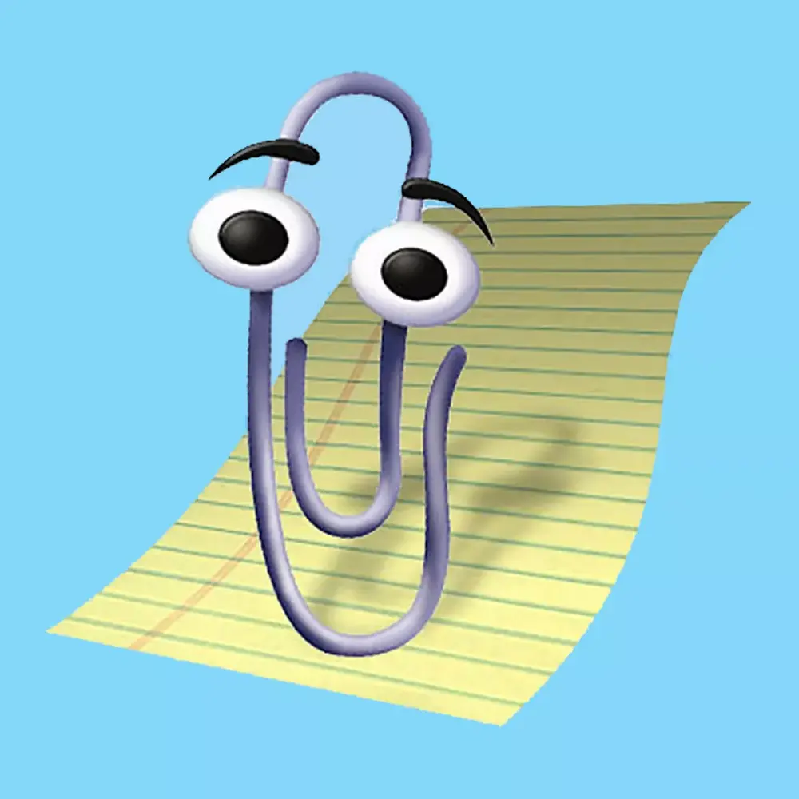

Clippit Fresh PowerTools for OpenXml
Create, transform, compare, split, and validate Office documents with a modern .NET library and a native CLI built for automation. Clippit wraps the Open XML SDK with high-level APIs for Word, Excel, and PowerPoint workflows.

Clippit — Fresh PowerTools for OpenXml
Clippit is a .NET library for programmatically creating, modifying, and converting Word (DOCX), Excel (XLSX), and PowerPoint (PPTX) documents. Built on top of the Open XML SDK, it provides high-level APIs that handle the complexity of the Open XML format so you can focus on your content. It also includes a scriptable CLI with a compact start page and dedicated PowerPoint, Word, and Excel command references.
Getting Started
dotnet add package Clippitdotnet tool install -g Clippit.Clinpm install -g clippitSplit a PowerPoint presentation into individual slides:
using Clippit.PowerPoint;
var presentation = new PmlDocument("conference-deck.pptx");
var slides = PresentationBuilder.PublishSlides(presentation);
foreach (var slide in slides)
{
slide.SaveAs(Path.Combine("output", slide.FileName));
}
Features
Clippit covers a broad range of document processing scenarios across all three Office formats. Every feature listed below has a dedicated tutorial with API signatures and code samples.
Word
| Feature | Description |
|---|---|
| DocumentAssembler | Populate DOCX templates with data from XML, including images and inline HTML |
| DocumentBuilder | Merge, split, and reorganize DOCX files with an extensible ISource model and TableCellSource |
| WmlComparer | Compare two DOCX files and produce a diff with revision tracking markup |
| WmlToHtmlConverter | High-fidelity conversion from DOCX to HTML/CSS |
| HtmlToWmlConverter | Convert HTML/CSS back into a properly structured DOCX |
| RevisionProcessor | Accept or reject tracked revisions programmatically |
| MarkupSimplifier | Clean up and normalize DOCX markup for easier processing |
Excel
| Feature | Description |
|---|---|
| SpreadsheetWriter | Generate multi-sheet XLSX files with formatted tables, streaming support for millions of rows, and a concise Cell Builder API |
| SmlDataRetriever | Extract data and formatting from existing spreadsheets as structured XML |
PowerPoint
| Feature | Description |
|---|---|
| PresentationBuilder | Merge and split PPTX files, with a Fluent API for ergonomic slide composition and optimized slide publishing |
CLI
| Feature | Description |
|---|---|
| Clippit CLI | Scriptable PPTX split/build/verify, manifest-driven DOCX build/compare/consolidate, DOCX assembly/cleanup/validation/HTML conversion, and XLSX create/validation/conversion with a concise start page plus dedicated PowerPoint, Word, and Excel references |
Common
| Feature | Description |
|---|---|
| OpenXmlRegex | Search and replace content across DOCX/PPTX using regular expressions |
| MetricsGetter | Retrieve document metrics — style hierarchy, languages, fonts, and more |
Compatibility
- Target:
net10.0 - Dependency: DocumentFormat.OpenXml (Open XML SDK)
- Platforms: Windows and Linux (continuously tested on both)
- Side-by-side: Can coexist with the original Open-Xml-PowerTools assembly
Heritage
Clippit originated as a fork of Open-Xml-PowerTools and has since evolved into an independently maintained library with new features, performance improvements, and modern .NET support. See the Changelog for the full release history.
Questions and Contributing
Have a question or idea? Start a GitHub Discussion.
Found a bug or want to request a feature? Open an Issue.
Copyright (c) Microsoft Corporation 2012-2017
Portions Copyright (c) Eric White Inc 2018-2019
Portions Copyright (c) Sergey Tihon 2019-2026
Licensed under the MIT License.